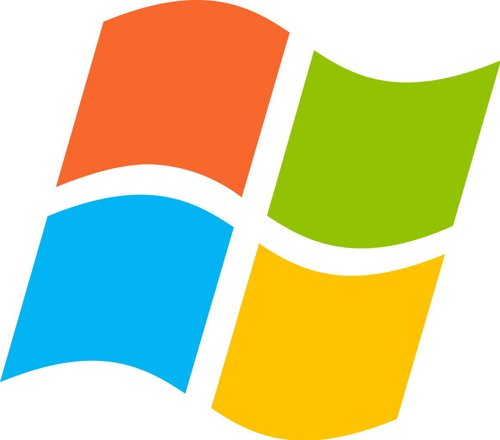

Kenapa Windows ?Windows menawarkan berbagai fitur dan kemampuan yang membuatnya menjadi pilihan ideal bagi pengguna dengan berbagai kebutuhan. Sistem operasi ini mudah digunakan, stabil, dan aman. Windows adalah pilihan yang tepat bagi siapa saja yang ingin mendapatkan pengalaman komputasi terbaik. |
 |
|---|
Awal Mula
1985 - 1990
- Windows 1.0 (1985) diluncurkan sebagai GUI pertama untuk MS-DOS, menawarkan interaksi visual dan multitasking.
- Windows 2.0 (1987) dan 3.0 (1990) meningkatkan kemampuan grafis dan menambahkan fitur seperti File Manager dan Program Manager.
Era Kejayaan
1995 - 2000an
- Windows 95 (1995) menjadi fenomena global dengan antarmuka yang lebih user-friendly, menu Start, dan taskbar.
- Windows 98 (1998) dan Windows Me (2000) menghadirkan dukungan multimedia yang lebih baik dan konektivitas internet.
- Windows 2000 (2000) difokuskan pada stabilitas dan keamanan untuk pengguna bisnis.
Terbaru
Sekarang
- Windows 11 (2021) menawarkan desain taskbar baru, menu Start yang diperbarui, dan fitur keamanan yang lebih kuat.
Era Modern
2000an - 2015
- Windows XP (2001) menjadi salah satu OS paling populer dengan stabilitas, kompatibilitas, dan tema visual yang menarik.
- Windows Vista (2007) menawarkan grafis Aero yang memukau, namun terkendala spesifikasi hardware yang tinggi.
- Windows 7 (2009) menghadirkan performa yang lebih baik dan berbagai perbaikan dari Vista.
- Windows 8 (2012) memperkenalkan antarmuka Modern UI yang dioptimalkan untuk perangkat touchscreen.
- Windows 10 (2015) menghadirkan kombinasi desktop klasik dan Modern UI, serta update fitur secara berkala.